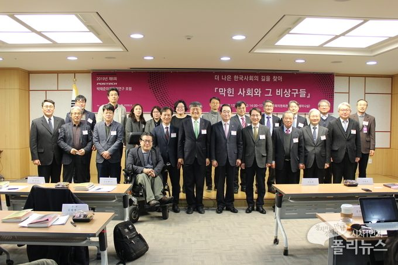

매체 폴리뉴스보도일 2019-02-22
'더 나은 한국사회의 길 모색' 포럼 열려
박태준미래전략연구소, 국회미래연구원 공동 개최
'막힌 사회와 그 비상구들' 주제로 국회에서
포스텍 박태준미래전략연구소와 국회미래연구원이 ‘더 나은 한국사회의 길을 찾아 - 막힌 사회와 그 비상구들’을 주제로 한 공동포럼을 국회에서 개최했다. <사진= 포스텍 박태준미래전략연구소 제공>
▲ 포스텍 박태준미래전략연구소와 국회미래연구원이 ‘더 나은 한국사회의 길을 찾아 - 막힌 사회와 그 비상구들’을 주제로 한 공동포럼을 국회에서 개최했다. <사진= 포스텍 박태준미래전략연구소 제공>
한국사회가 직면한 여러 갈등문제의 실태를 점검하고 이를 타개할 대안을 모색하는 포럼이 열렸다.
포스텍 박태준미래전략연구소(소장 김승환)와 국회미래연구원(원장 박진)은 최근 국회의원회관 제3세미나실에서 ‘더 나은 한국사회의 길을 찾아 - 막힌 사회와 그 비상구들’의 주제로 공동포럼을 개최했다.
이번 공동포럼은 국가와 사회가 당면한 여러 갈등 문제에 대한 연구 결과를 공유하고 대응 전략을 모색함으로써 더 나은 한국 사회 발전에 기여하기 위해 마련됐다.
이 자리에서 연세대학교 한준 교수 등 6명의 갈등 관련 연구자들은 계층 양극화, 정규직-비정규직 차별, 세대 갈등, 젠더 갈등, 이념 갈등 등에 대한 연구 결과를 발표하고 미래연구원 연구진이 열띤 토론을 펼쳤다.
「한국사회의 계층 양극화」에서 한준 교수는 노동시장의 이중구조 심화, 소득 불평등과 자산불평등의 상관성, 세대 내(內) 불평등과 세대 간 불평등의 고착화를 살펴봤다. 한 교수는 계층 갈등의 비상구를 이른 시기의 실효성 있는 교육정책에서 찾았다. 이를 통해 보다 빠른 시점에서 학교를 통해 저소득층 또는 부모로부터 지원을 충분히 받지 못하는 아동들을 위한 실효성 있는 교육 지원정책이 충분히 이루어져야 한다고 제언했다.
김원섭 교수(고려대)는 「한국 노동사회의 갈등: 내부자 외부자의 복지정치」에서 노동시장의 이원주의와 복지 이원주의의 재생산이 불평등의 구조적인 ‘벽’을 더 높게 쌓아올리는 문제를 지적했다. 김 교수에 따르면 1997년 외환위기사태(IMF사태)는 해고의 유연성을 담보하는 비정규직을 양산하고, 특히 기업 기반으로 구성된 노동조합체제는 내부자와 외부자 간의 연대가 이루어지기 어려운 구조를 굳히게 되었다. 김 교수는 ‘인간은 어떻게 살아야 하는가?’, ‘어떤 사회가 더 인간다운 삶을 보장하는 사회인가?’라는 질문을 통한 포용적 복지체계에서 그 해답을 모색했다.
김왕배 교수(연세대)는 「세대 갈등과 인정투쟁」에서 세대 갈등을 촉발한 주요 사건에 관한 온라인 공론장의 담론을 분석했다. 그 결과, 세대 갈등이 특정 세대(20-30대)가 기성세대에 의해 희생을 강요당한다는 담론으로 확장되며, 그 근저에는 구조화된 항구적 불평등에 대해 비판의식과 거부의식이 있다는 것을 실증적으로 확인해준다고 분석했다. 김 교수는 세대 간 실질적인 자원(참여, 권력, 명예, 부, 일자리, 삶의 기회, 교육 등)을 ‘정당’하게 배분하는 제도적 차원의 통로를 제공함으로써 신뢰와 연대가 가능할 때 인정의 진정한 결과가 산출된다고 보았다.
배은경 교수(서울대)는 「한국사회의 젠더와 젠더갈등: 청년세대를 중심으로」에서 젠더에 대한 오해의 고정관념에 갇혀 있던 우리 사회에서 젠더갈등이 대두된 과정과 실태를 고찰했다. 배 교수에 따르면 젠더 갈등은 ‘같은 청년세대’ 내부의 분절이라는 더욱 심각한 양상을 드러낸다. 배 교수는 젠더 질서의 재구성 과정에서 일어나는 다양한 파열음이 청년세대 내부의 남녀대립 구도를 악화시킨 실상을 들여다봤다.
강원택 교수(서울대)는 「더 나은 한국사회를 위한 분절 문제와 해소 방안: 이념 갈등」에서 한국 사회 내부의 이념 갈등은 정치엘리트 집단이 정권을 획득하기 위한 수단으로 그 갈등을 사유화해 증폭시킨 측면이 크고, 정치권의 이념적 극화 현상이 일반 국민에게 영향을 미쳤기 때문이라는 견해에 동의했다. 강 교수는 이를 해결하기 위해 정치적 중간세력 육성 또는 비례적 선거제 등을 제안했다.
방민호 교수(서울대)는 「물질주의에 관하여」에서 물질주의의 근원을 탐구해 물질주의와 정신적 가치의 사이의 ‘벽’으로 규정하고 파스칼, 마르크스, 토마스 홉스, 한국 근대사, 사도 바울의 세계를 중심으로 물질주의와 인간 존재의 본질에 대한 탐색을 거친 후 그 해결책으로 정의를 제시했다.
[출처]
폴리뉴스] '더 나은 한국사회의 길 모색' 포럼 열려 _ 2019.02.22
김일연 기자 imgok@polinews.co.kr등록 2019.02.22 11:31:30

